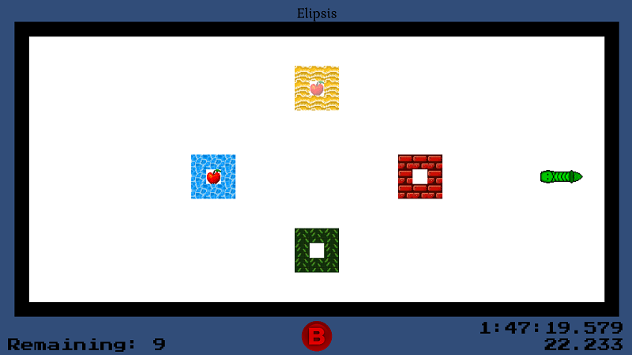

PhaseWorm
PhaseWorm0.3.0
2023 Jan 11
After over 2 years of silence, I’m excited to announce another new feature release which takes the game from 0.2.x to 0.3.x. That’s right, PhaseWorm development has restarted!
-
New Features!
- Xbox and Gamepad controller support! Xinput controller should be automatically detected and usable in the game’s engine with no additional configuration needed.
- Quick restart! Press ` (tilde) or the select / back button on your Xbox controller to instantly restart any level.
- Phase predictors will now change depending on your controller input scheme to show you the correct keyboard key xor Xbox controller button, depending on what it senses you are using.
-
Backend:
- Refactored all input handling from the ground up using Unity’s new input system.
- Single PlayerInput now runs per scene instead of multiple competing input listeners.
- Fixed a bug where players could crash the game creating a profile.
-
Misc:
- Added MikeIsMyIke, first person to beat the game, into the credits as a tester.
- Fixed Unsightly Credits Kerfuffle. Deleted A Name.
